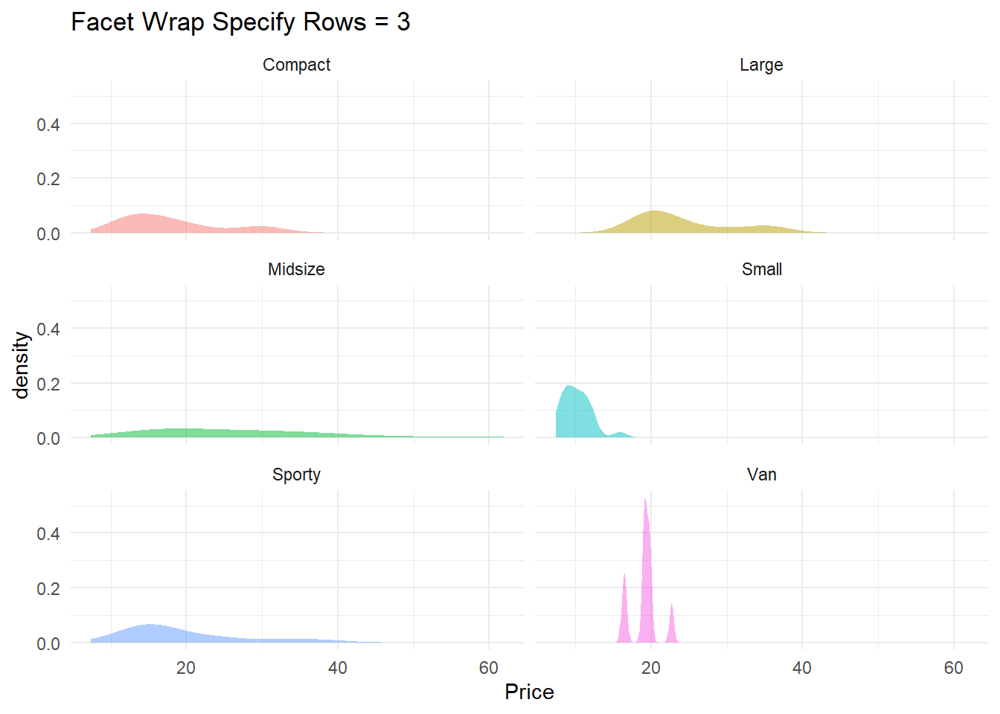
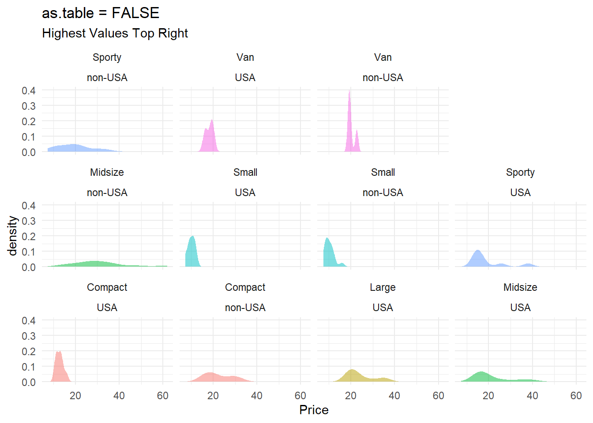
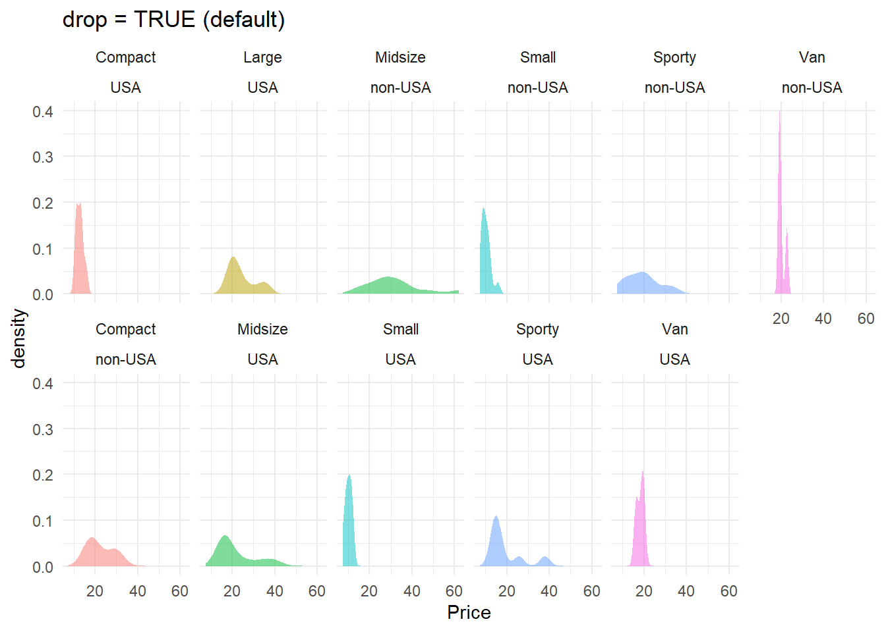

Facets
Note that many ideas on this page are taken directly from the ggplot2 book. A fantastic resource!
1 Facet Wrap vs Grid
At times it is helpful to split a graph into separate panels. You have the most control over this process using either a facet_wrap or facet_grid layer. Note, in ggformul, you can also use the | notation, which uses facet_wrap.
Facet Wrap will order facets into a rectangular layout. You have control over how many rows and columns there are, and can adjust the strip position (label of facet).
Facet grid will organize facets into columns and/or rows based on how many categories exist in the varaibles used. You don’t have as much flexibility to adjust the number of columns nor rows, but the labels tend to be more clear if using more than one variable to facet.
1.1 Examples of Facet Wrap vs Grid
gf_point(hwy~displ, data = mpg, color = ~manufacturer) %>%
gf_labs(title = "The Need for Facets", subtitle = "To Add Clarity To Cluttered Charts")gf_point(hwy~displ, data = mpg, color = ~manufacturer, show.legend = FALSE) %>%
gf_facet_wrap(~manufacturer) %>%
gf_labs(title = "Facet Wrap")gf_point(hwy~displ, data = mpg, color = ~manufacturer, show.legend = FALSE) %>%
gf_facet_grid(~manufacturer) %>%
gf_labs(title = "Facet Grid on X axis (columns)")
gf_point(hwy~displ, data = mpg, color = ~manufacturer, show.legend = FALSE) %>%
gf_facet_grid(manufacturer~.) %>%
gf_labs(title = "Facet Grid on Y axis (rows)")
gf_point(hwy~displ|manufacturer, data = mpg, color = ~manufacturer, show.legend = FALSE) %>%
gf_labs(title = "Wrap Using | Notation") # Facet One Variable
# Facet One Variable
1.2 Facet Wrap (one variable)
Facet wrap allows you to specify how many rows and/or how many columns you’d like displayed. Additionally, you can change the location of the strip to make the facets easier to read.
gf_density(~Price, data = Cars93, fill = ~Type, show.legend = FALSE) %>%
gf_facet_wrap(~Type)## Warning: `stat(density)` was deprecated in ggplot2 3.4.0.
## ℹ Please use `after_stat(density)` instead.
## This warning is displayed once every 8 hours.
## Call `lifecycle::last_lifecycle_warnings()` to see where this warning was
## generated.
gf_density(~Price, data = Cars93, fill = ~Type, show.legend = FALSE) %>%
gf_facet_wrap(~Type, nrow = 3)
gf_density(~Price, data = Cars93, fill = ~Type, show.legend = FALSE) %>%
gf_facet_wrap(~Type, nrow = 1)
gf_density(~Price, data = Cars93, fill = ~Type, show.legend = FALSE) %>%
gf_facet_wrap(~Type, ncol = 1, strip.position = "right")
1.3 Facet Grid (one variable)
The facet grid command follows the same Y ~ X notation that many ggformula commands follow. To order panels into rows, have the variable on the Y axis. To order panels into columns, have the variable on the X axis.
gf_density(~Price, data = Cars93, fill = ~Type, show.legend = FALSE) %>%
gf_facet_grid(~Type) %>%
gf_labs(title = "Facet Grid into Columns")
gf_density(~Price, data = Cars93, fill = ~Type, show.legend = FALSE) %>%
gf_facet_grid(Type~.) %>%
gf_labs(title = "Facet Grid into Rows")
2 Facet Two Varibles
2.1 Facet Wrap (2 variables)
Facet wraps with 2 variables will default to the labels stacked.
You can control how the ribbon is wrapped into a grid with ncol, nrow, as.table and dir. ncol and nrow control how many columns and rows (you only need to set one). as.table controls whether the facets are laid out like a table (TRUE), with highest values at the bottom-right, or a plot (FALSE), with the highest values at the top-right. dir controls the direction of wrap: horizontal or vertical.
gf_density(~Price, data = Cars93, fill = ~Type, show.legend = FALSE) %>%
gf_facet_wrap(Type~Origin) %>%
gf_labs(title = "Facet Wrap with 2 Variables")
gf_density(~Price, data = Cars93, fill = ~Type, show.legend = FALSE) %>%
gf_facet_wrap(Type~Origin, as.table = FALSE) %>%
gf_labs(title = "Facet Wrap with 2 Variables", subtitle = "Not as table default")
gf_density(~Price, data = Cars93, fill = ~Type, show.legend = FALSE) %>%
gf_facet_wrap(Type~Origin, nrow = 2, dir = "v") %>%
gf_labs(title = "Facet Wrap with 2 Variables")
2.2 Facet Grid (2 variables)
Facet grids with 2 variables may be easier to read as their labels are split.
gf_density(~Price, data = Cars93, fill = ~Type, show.legend = FALSE) %>%
gf_facet_grid(Type~Origin) %>%
gf_labs(title = "Facet Grid with 2 Variables")
gf_density(~Price, data = Cars93, fill = ~Type, show.legend = FALSE) %>%
gf_facet_grid(Origin~Type) %>%
gf_labs(title = "Facet Grid with 2 Variables")
3 Three Variables
Once you start adding in more than 2 variables - things can get complicated. Be aware of making your graph too complicated and decide if you should instead split things up into separate visuals.
gf_density(~Price, data = Cars93, fill = ~Type, show.legend = FALSE) %>%
gf_facet_grid(Origin+DriveTrain~Type, scales = "free") %>%
gf_labs(title = "Facet Grid with 2 Variables")## Warning: Groups with fewer than two data points have been dropped.
## Groups with fewer than two data points have been dropped.
## Groups with fewer than two data points have been dropped.## Warning in max(ids, na.rm = TRUE): no non-missing arguments to max; returning
## -Inf
## Warning in max(ids, na.rm = TRUE): no non-missing arguments to max; returning
## -Inf
## Warning in max(ids, na.rm = TRUE): no non-missing arguments to max; returning
## -Inf
4 Free Scales
By default the x-axis and y-axis scales are fixed. To allow scales to adjust based on panel you can use one of the following:
scales = “free_x”: the x scale is free, and the y scale is fixed. scales = “free_y”: the y scale is free, and the x scale is fixed. scales = “free”: x and y scales vary across panels.
Fixed scales make it easier to see patterns across panels; free scales make it easier to see patterns within panels.
gf_density(~Price, data = Cars93, fill = ~Type, show.legend = FALSE) %>%
gf_facet_wrap(~Type, ncol = 1, strip.position = "right", scales = "free_y")5 Free Space
The facet_grid() function has an additional parameter called space, which takes the same values as scales. When space is “free”, each column (or row) will have width (or height) proportional to the range of the scale for that column (or row).
require(forcats)## Loading required package: forcats## Warning: package 'forcats' was built under R version 4.2.3gf_point(fct_reorder(model, hwy)~hwy, data = mpg, color = ~manufacturer, show.legend = FALSE) %>%
gf_facet_grid(manufacturer~., scales = "free_y", space = "free") %>%
gf_theme(strip.text.y = element_text(angle=0)) %>%
gf_labs( y = "" , x = "Miles Per Gallon")
6 Labeller
The labeller function label_both() will print out both the name of the variable and the value of the variable in each facet.
See the labeller reference for all things you’re able to do.
6.1 Label both variable & value
theme_set(theme_light())
# Before
gf_point(mpg~wt, data = mtcars) %>%
gf_facet_grid(am~vs+cyl) %>%
gf_labs(title = "Before")
# After
gf_point(mpg~wt, data = mtcars) %>%
gf_facet_grid(am~vs+cyl, labeller = "label_both")%>%
gf_labs(title = "After")6.2 Changing labels (define & then use instead)
# Define Labels
conservation_status <- c(
cd = "Conservation Dependent",
en = "Endangered",
lc = "Least concern",
nt = "Near Threatened",
vu = "Vulnerable",
domesticated = "Domesticated"
)
# Before
gf_bar(vore~., data = na.omit(msleep)) %>%
gf_facet_grid(~conservation) %>%
gf_labs(title = "Before")# After
gf_bar(vore~., data = na.omit(msleep)) %>%
gf_facet_grid(~conservation, labeller = labeller(conservation = conservation_status))%>%
gf_labs(title = "After")
6.3 Wrap Labels
gf_point(hwy~displ, data = mpg, color = ~manufacturer, show.legend = FALSE) %>%
gf_facet_wrap(~manufacturer) %>%
gf_labs(title = "Facet Wrap")
gf_point(hwy~displ, data = mpg, color = ~manufacturer, show.legend = FALSE) %>%
gf_facet_wrap(~manufacturer, labeller = (manufacturer = label_wrap_gen(10))) %>%
gf_labs(title = "Facet Wrap")
6.4 Adding units to labels
gf_point(hwy~displ, data = mpg, color = ~cyl, show.legend = FALSE) %>%
gf_facet_wrap(~cyl, labeller = labeller(cyl = ~paste(.x, "cylinders")))